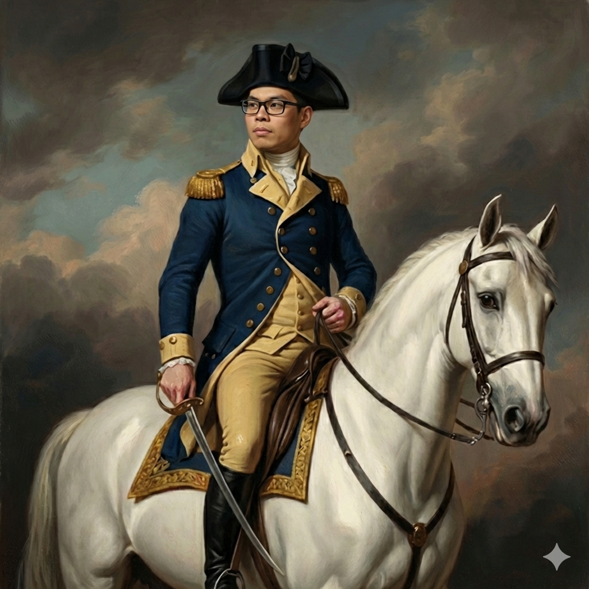

Two gunslingers, one light bulb, two different answers to "who shot first?" — a demonstration of the relativity of simultaneity.
A spaceship of proper length \(L_0 = 600\) m cruises past Earth at \(v = 0.995\,c\) heading leftward (toward Earth). Inside the ship, Alice stands at the 0 m mark (the front of the ship, in the direction of motion) and Bob stands at the 600 m mark (the rear). A light bulb is mounted at the exact midpoint, 300 m from each. When the bulb flashes, each duelist will shoot the instant the light wave reaches them — so whoever gets hit by light first shoots first.
Meanwhile, Eve, an Earth-based judge, watches the whole thing. She is supposed to rule whether the duel was fair. In the ship's own frame, the two are hit by light simultaneously and vaporize each other at the same instant — a perfectly fair duel. In Eve's frame on Earth, the story will turn out differently.
At this speed, the Lorentz factor is
$$ \gamma \;=\; \frac{1}{\sqrt{1 - v^2/c^2}} \;=\; \frac{1}{\sqrt{1 - 0.995^{2}}} \;\approx\; 10.01. $$Two kinematic facts follow immediately — both will matter below:
Length contraction. Eve sees the ship squeezed along its direction of motion:
$$ L \;=\; \frac{L_0}{\gamma} \;=\; \frac{600\;\text{m}}{10.01} \;\approx\; 59.9\;\text{m}. $$Lorentz transformation of time. Two events that happen in the ship's frame at \((t', x')\) occur in Eve's frame at
$$ t \;=\; \gamma\!\left(t' + \frac{v\,x'}{c^{2}}\right), \qquad x \;=\; \gamma\,(x' + v\,t'). $$For two events that are simultaneous in the ship's frame (so \(\Delta t' = 0\)) but separated along the motion by \(\Delta x'\), Eve sees them split in time by
$$ \Delta t \;=\; \gamma\,\frac{v\,\Delta x'}{c^{2}}. $$That single formula — the "relativity of simultaneity" — is what makes this duel unfair in Eve's frame.
About the animations. Real light moves at \(3\times 10^{8}\) m/s, which is far too fast to see. The animations use a "movie" speed of light \(c_{\text{movie}} = 300\) m/s so the waves are visible. All the equations use the real \(c\); the movie is just a slow-motion viewer. Also, in Eve's frame Alice waits about 400 times longer than Bob for the light to arrive, so the Eve-frame animation automatically fast-forwards through the long wait (the clock in the corner advances faster) and slows back to normal for each arrival. The speed buttons below each canvas multiply everything uniformly.
In the ship's own reference frame, Alice, Bob, and the bulb are all at rest. The bulb is equidistant from both duelists, and light travels at \(c\) in both directions, so the two arrival events are simultaneous:
$$ t'_\text{A hit} \;=\; t'_\text{B hit} \;=\; \frac{L_0/2}{c} \;=\; \frac{300\;\text{m}}{3\times 10^{8}\;\text{m/s}} \;=\; 1\;\mu\text{s}. $$Both pull the trigger at the same instant. Each laser beam then has to cross the full 600 m to hit the opposite duelist:
$$ t'_\text{vaporize} \;=\; 1\;\mu\text{s} + \frac{L_0}{c} \;=\; 1\;\mu\text{s} + 2\;\mu\text{s} \;=\; 3\;\mu\text{s}. $$The two vaporization events are simultaneous in this frame — a fair duel.
Before we look at Eve's frame, we need to know how long the spaceship appears to her. Length contraction says that lengths along the direction of motion are squeezed by a factor of \(\gamma\):
$$ L \;=\; \frac{L_0}{\gamma} \;=\; L_0\sqrt{1 - v^{2}/c^{2}}. $$With \(L_0 = 600\) m and \(v = 0.995\,c\):
$$ L \;=\; 600\;\text{m}\,\sqrt{1 - 0.995^{2}} \;=\; 600\;\text{m} \cdot 0.0999 \;\approx\; 59.9\;\text{m}. $$That is an astonishing squeeze: what the crew measures as a six-hundred-meter vessel, Eve measures with her rulers as a sixty-meter sliver. This contracted length \(L\) is the spacing between Alice and Bob in her frame — it's the distance the light in her frame has to cross. (Note: only distances along the direction of motion contract. Heights and widths perpendicular to the motion are unchanged.)
The two ships are drawn at the same scale. The upper one shows the rest length the crew measures; the lower shows what Eve measures with her meter sticks as the ship whips past at \(0.995\,c\).
From Eve's perspective, the contracted ship is flying leftward at \(v = 0.995\,c\). Alice rides the front (leading edge); Bob rides the rear (trailing edge). When the bulb flashes, Eve says the light travels at \(c\) in both directions in her frame — that's the whole content of the second postulate of relativity.
Think about what that means: the right-going wavefront is heading toward Bob at \(c\), while Bob himself is racing into it at \(0.995\,c\). The gap between them shrinks at a rate \(c + v\) (a closing speed, see the note below). The left-going wavefront, on the other hand, is chasing Alice, who is running away from it at almost \(c\). That gap shrinks at only \(c - v\). So in Eve's frame:
$$ t_\text{B hit} \;=\; \frac{L/2}{c + v}, \qquad t_\text{A hit} \;=\; \frac{L/2}{c - v}. $$Plugging in \(L = 59.9\) m and \(v = 0.995\,c\):
$$ t_\text{B hit} \;=\; \frac{29.96\;\text{m}}{1.995\,c} \;\approx\; 5.01\times 10^{-8}\;\text{s} \;=\; 0.050\;\mu\text{s}, $$ $$ t_\text{A hit} \;=\; \frac{29.96\;\text{m}}{0.005\,c} \;\approx\; 2.00\times 10^{-5}\;\text{s} \;=\; 20.0\;\mu\text{s}. $$The difference is \(\Delta t \approx 19.9\;\mu\text{s}\) — Alice is hit by light roughly 400 times later than Bob. You can get the same answer more slickly from the Lorentz-transform identity \(\Delta t = \gamma v\,\Delta x'/c^{2}\):
$$ \Delta t \;=\; \gamma\,\frac{v\,L_0}{c^{2}} \;=\; 10.01 \cdot \frac{0.995\,c \cdot 600\;\text{m}}{c^{2}} \;=\; \frac{5977\;\text{m}}{c} \;\approx\; 19.9\;\mu\text{s}. \;\checkmark $$So in Eve's frame, Bob is hit first and shoots first. Alice is still standing there, oblivious, for another 20 μs of Eve's time. From Eve's viewpoint this is a firing-squad situation masquerading as a duel — Bob gets to shoot long before Alice even sees the flash.
Once each trigger is pulled, the laser still has to cross the ship to find its target. In Eve's frame, Alice's beam (fired at \(t \approx 20\;\mu\text{s}\)) is rushing rightward to meet Bob, who is sprinting leftward into it — they close at \(c + v\) and meet almost instantly, at \(t \approx 20.08\;\mu\text{s}\). Bob's beam (fired way back at \(t \approx 0.05\;\mu\text{s}\)) is chasing Alice, who is fleeing in the same direction — they close at only \(c - v\) and don't meet until \(t \approx 40\;\mu\text{s}\). So in Eve's frame Bob is vaporized about 20 μs before Alice. The order of the two vaporization events survives (it must, because they are causally linked through the ship's own timeline) but the gap between them is stretched apart.
Is this relativistic velocity addition? No. The quantities \(c+v\) and \(c-v\) above are closing speeds — the rate at which the distance between two moving things shrinks, both tracked inside Eve's one inertial frame. Closing speeds may exceed \(c\); they are not the velocity of any single object, so no law is broken. Relativistic velocity addition (\(u' = (u - v)/(1 - uv/c^{2})\)) is for a different question: "given that object X moves at \(u\) in my frame, what speed does a second observer, moving at \(v\) relative to me, measure for \(X\)?" We never cross between frames in the derivation above — we just track distances in Eve's frame — so velocity addition is not needed here.
In the ship frame, the light bulb is at rest halfway between Alice and Bob, so its photons arrive at the two ends at the same moment. Both shoot; both are vaporized; fair duel.
In Eve's frame, the bulb is at rest with respect to her too once it flashes — the flash event is a single point in spacetime, not attached to the ship. The light expands outward at \(c\) from that fixed point in her frame. But Alice and Bob are moving leftward at nearly \(c\). Bob (rear) rushes into the rightward-going wavefront; Alice (front) sprints away from the leftward-going one. The two arrival events that were simultaneous in the ship's frame split apart in Eve's.
This isn't a glitch in either observer's measurement — both are correct in their own frame. Simultaneity is relative:
$$ \boxed{\;\Delta t \;=\; \gamma\!\left(\Delta t' + \frac{v\,\Delta x'}{c^{2}}\right).\;} $$Even if two events have \(\Delta t' = 0\) in one frame, a second frame moving relative to the first will generally measure \(\Delta t \ne 0\). The size of the split grows with both the relative velocity \(v\) and the spatial separation \(\Delta x'\) of the events. That is why relativistic simultaneity effects are utterly invisible in daily life (\(v/c\) too small) but dominate the duel above (\(v/c = 0.995\) and a 600-meter gap).
Footnote on the vaporization events. Even though the two arrival events are split by 20 μs in Eve's frame, once both duelists have fired, the lasers chase down their targets. If you crunch the Lorentz transform for the vaporization events \((t' = 3\;\mu\text{s}, x' = 0)\) and \((t' = 3\;\mu\text{s}, x' = 600\;\text{m})\), you'll find Bob is vaporized about 20 μs before Alice in Eve's frame as well — the order of events is preserved because they are causally connected through the ship's own timeline. Eve and the ship's crew disagree on when things happen, but they agree that "Bob fired a laser" caused "Alice was vaporized" and vice versa.